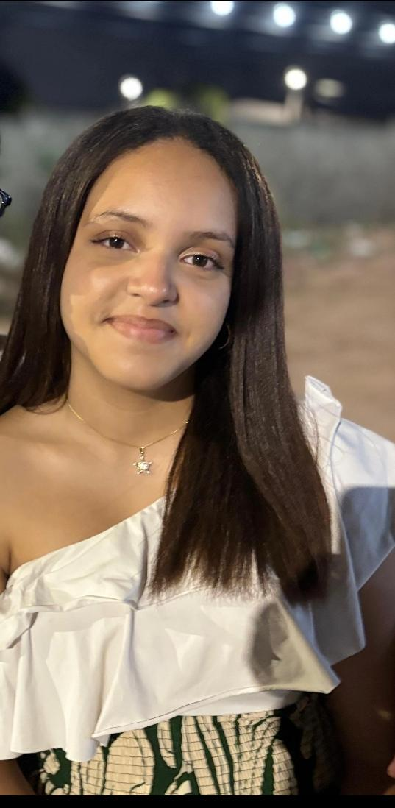

Oii, bem-vindo! Você chegou na parte do meu portfólio em que ele fala um pouquinho sobre mim, então eu me chamo Jade Ribeiro Santos, tenho 16 anos, tô perto de fazer 17 já e eu estudo na Escola Francisco Ivo, onde tem curso de informática e administração, e como vocês podem ver eu curso informática. E, sendo sincera, eu gostei muito de ter conhecido a matéria de programação web, gostei muito mesmo, de verdade. Mesmo passando raiva quando não consigo fazer as coisas, é uma coisa legal. Se eu não estivesse focada em medicina veterinária, com toda certeza eu iria querer trabalhar como programadora.
Como eu estava falando, desde pequena eu tenho isso na cabeça, que eu quero me formar em medicina veterinária. Eu sempre gostei muito dos animais e sempre tive uma certa conexão com eles, então se torna a profissão perfeita para mim. Já pensei em ir para a área militar, mas de algum jeito os animais me chamam. É engraçado falar isso, mas depois de um tempo percebi que de fato é isso que acontece. Já cheguei até a cuidar de alguns gatinhos aqui na escola, infelizmente um morreu, mas os outros sei que estão bem por terem sido adotados.
No meu tempo livre eu gosto bastante de fazer várias coisas, pra dizer a verdade: gosto de pintar desenhos, gosto de tentar desenhar, gosto de jogar com meu namorado ou com meus amigos, gosto de assistir filmes e séries sozinha ou com meu namorado também e gosto bastante de cozinhar. Uma meta de vida que eu tenho é poder me formar e dar uma vida melhor para meus pais e que eles fiquem vivos até isso acontecer. E outra meta que eu tenho é aprender inglês e espanhol para poder viajar pelo mundo e criar minha própria clínica veterinária junto com pet shop, com atendimento 24 horas e que tenha tipo uma espécie de “samu” para ajudar os animais.